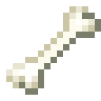
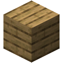
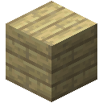
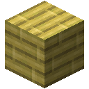

竞技场
想要一种生物的掉落物，有两个办法。一个是去打它。另一个是把它怎么打架记下来，直到模型能照着做，然后让模型去打，就在竞技场的地板上，只要电力撑得住。
记下一只生物
对一只生物使用空白的生物日志。日志就记下这一种，也记住这一只的样子。之后把它放在背包里的任何地方，它会为你身边 16 格内每只同类生物写一行，最多十六只，每秒查看四次。带着它去和它们打：只站着不动的生物什么也写不下，而模型要看的正是它怎么打架。
一行以代表这种生物的大写字母开头。之后每次查看是一个表示当时情形的字母，和一个表示它接着做了什么的数字。这是一只僵尸那一行的结尾：
i1i1h1h1h3g5g3g3g3g5g1g3g1h1
字母说明它追逐的目标有多远（六档，从不到 2 格到超过 16 格），它是否在追逐什么，以及它是否刚受了伤。数字是下面之一：
| 数字 | 这只生物做了什么 |
|---|---|
| 0 | 站着不动 |
| 1 | 靠近 |
| 2 | 后退 |
| 3 | 绕着走 |
| 4 | 跃起 |
| 5 | 攻击 |
| 6 | 蓄势：拉弓、膨胀、施法、充能 |
| 7 | 突然到了别处 |
 无序合成
无序合成









练习
放进模型核心的数据槽，生物日志就是模仿测试的练习。每次查看时，模型都要回答这只生物接下来做了什么，并从答案中学习。它什么也不尝试，也没有奖励：它只是照抄，这叫行为克隆。模仿数据集里是同样的行，记录了十三种生物，模仿测试问的是其中练习从未展示过的行，每种生物同等计算。竞技场只问它日志里的那种生物，所以核心里可以同时放这本日志和数据集，或者同一种生物的几本日志。
要学的东西大多是时机。上面那只僵尸每四次查看攻击一次，所以模型要沿着这一行往回读，才知道下一击何时落下；骷髅拉弓四次查看，三次查看后放箭，每八次一轮。
生物的行为有一部分是随机的，所以没有模型能全部答对。在模仿测试中，只看最后几个字符的模型停在 72%，两层注意力停在 74%。两个 Transformer 块大约 2,000 步后通过 76%。
房间
制造机用 Transformer 光掩模制造竞技场。把它嵌进一个封闭房间的墙里，从房间里面放置，让它朝内。房间必须是空的，至少 3×3、高 2，至多 21×21、高 8，每一面都由实心方块或玻璃封住。地板上每三格（横竖都是）有一块台，每块台上一场战斗。
把日志放进竞技场界面左边的槽位，把模型放进旁边的面板：一个检查点或调谐好的中继卡。竞技场先用日志中练习从不读的那十分之一检查模型：在这些查看中，它认为最可能的动作有多少正是这只生物真实的动作。
这个比例本身说明不了多少。苦力怕大多是在靠近，所以任何说它在靠近的东西大多时候都对；而蜘蛛接下来做什么，谁来读都很难说对。所以竞技场在日志其余的部分上数出两张表，放在模型旁边比较。第一张只看字母：这个字母之后，这只生物最常做什么？第二张还往回读，读到对这本日志最有用的长度：这个字母和它刚做过的几件事之后，它最常做什么？模型从第一张表的比例走到第二张表的比例走了多远，就是它的相似值多少，而且可以超过第二张。
| 相似度 | 从第一张表走到第二张表的比例 | 检查的查看次数 | 算数的战斗掉落什么 |
|---|---|---|---|
| 粗糙 | 20% | 100 | 这种生物无人在旁时死亡的掉落物 |
| 尚可 | 40% | 200 | 被人杀死时的掉落物 |
| 良好 | 60% | 400 | 同上，按抢夺 I |
| 接近 | 80% | 800 | 同上，按抢夺 II |
| 以假乱真 | 100% | 1,600 | 同上，按抢夺 III |
相似度还要看查看次数。短日志能用来检查模型的内容不多，它的两张表见过的也不多，所以不管模型在上面表现多好，它能担保的也只有这么多；一本写满的日志大约有 2,300 次查看可供检查。在一本几乎写满的僵尸日志上练习 2,000 步后，只看最后几个字符的模型大约走六分之一，什么也挣不到；两层注意力走三分之二；两个 Transformer 块超过第二张表。简单的生物要求更低：烈焰人大多只是继续做上一步做的事，往回读一次查看就差不多知道了全部。
一场战斗持续十二秒。每次查看都要问模型这只生物接下来做什么，它选什么，台上那个小小的影像就做什么，同时陪练机架向它逼近。看看它们：差的模型扮演的生物没有节奏，想打就打，好的模型则步步逼近，出手合拍。它是接着自己做过的事往下走的，所以走错一步，就可能到了它读过的任何一行都没去过的地方，这是照抄的老毛病。然后这只生物倒下，这场战斗算数的概率就是模型正确的比例：75% 时，100 场中有 75 场有收获，其余的化作一缕烟。收获就是这种生物真实的掉落物，按它自己的战利品表掷出，凋灵的下界之星也是这样来的。
算力与电力
竞技场单独运行时一次一场战斗。每台接触它（或接触接触它的那台）的冷却训练加速器多运行一场，未冷却的算半场，最多每块台一场。前四台靠竞技场自身带动。其余的在竞技场工作时都要耗电，没有电可用就不亮，也不提供算力：见算力。21×21 的房间加 48 台冷却的加速器，可以同时运行 49 场，它们一共每刻耗电 3,520 FE。更精细的器件算得更多。
每场战斗每刻花费这种生物每点生命值 8 FE：僵尸每刻 160 FE，整场 38,400 FE；凋灵每刻 2,400。竞技场储存 4,000,000 FE。它把所有战斗一起交给模型，每次查看都要等回答，所以慢的模型或忙碌的服务器只会让战斗打得更慢，每场的电力不变。
地层
在勘测仪模型下方的槽位放一本田间日志，它会公平地抽取读过的地层行。放进核心，这本日志或地层数据集就是地层测试的练习：一行里的下一个方块。
竞技场也接受这本日志，但在基地达到前沿层级之前一直关闭。达到之后，通过地层测试的模型在每块台上每次查看写下一行地层，需要 16 台冷却的加速器的算力，每行 640 FE。它写下的每块矿石都像真的挖出来一样掉落，但不超过日志里的地层真正含有的比例：模型写进世界的钻石，不会多于它所知的地层。
 纸骨头橡木木板云杉木板白桦木板丛林木板金合欢木板深色橡木木板苍白橡木木板绯红木板诡异木板红树木板竹板樱花木板生物日志
纸骨头橡木木板云杉木板白桦木板丛林木板金合欢木板深色橡木木板苍白橡木木板绯红木板诡异木板红树木板竹板樱花木板生物日志